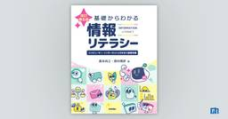

gihyo.jp：新刊書籍情報
https://gihyo.jp/book
パソコン書，IT書，理工書，実用書の出版社です。初心者の方から専門家の方まで，幅広い方に向けた書籍を刊行しています。
フィード

AIに聞きながら進める Excel VBAマクロ 引き継ぎガイド
gihyo.jp：新刊書籍情報
Excel VBAは長く使われているプログラミング言語です。Excelがあれば誰でもプログラムを作成することができ，またVBAは扱いやすいため，多くのマクロが作成され，また現代でも多くのビジネスシーンで使われています。そのため，マクロが使われている現場にもかかわらず，マクロの制作者がいないこともありえます。本書は他人が作成したExcel VBAマクロを，メンテナンスしないといけない状況に対応するための書籍です。ITに詳しいというだけで，プログラミング未経験者なのに，Excel VBAマクロに対処しないといけないかもしれません。でも心配ありません。本書を読めば，AIの力を借りて，Excel VBAマクロを解析して「見える化」を実現し，その上で仕様書やフロチャートを作成したり，リファクタリングや改良までも行うことまでも可能なのです。
25日後
60分でわかる！ iDeCo 個人型確定拠出年金 超入門［改訂新版］
gihyo.jp：新刊書籍情報
＜コンセプト＞2027年から適用されるiDeCo改正の最新情報に対応！ これから始める人のためのiDeCo入門書これから個人型確定拠出年金（iDeCo）を始める人が，その仕組みやメリット，具体的な運用方法までを網羅的に学べる1冊です。投資信託の選び方から老後資金の準備計画まで，幅広いテーマを網羅。iDeCoを「老後資金の準備」という観点から捉え，そのメリットを最大限に活かすための具体的な方法を提示します。節税効果や運用益の非課税といったメリットだけでなく，iDeCoならではの注意点やリスクについても言及して，読者に正しい知識と判断材料を提供します。★令和7年（2025年）の年金制度改正法により，iDeCo（個人型確定拠出年金）は2026年12月1日から大きく変わりました。主な改正内容は以下の3点。① 働き方にかかわらず，70歳未満（69歳）まで加入と掛金の拠出が可能に② 会社員，公務員，自営業者等の拠出限度額の引き上げ③ 企業型DCで事業主掛金を超えることができなかった加入者掛金の制限が撤廃最新の知識を身につけてiDeCoを始めたい人のための1冊です。※2025年1月刊行の『60分でわかる！ iDeCo 個人型確定拠出年金 超入門』の改訂版。
19日後
AHC入門―見て、考えて、改善するAtCoder Heuristic Contest
gihyo.jp：新刊書籍情報
競技プログラミングコンテスト「AtCoder Heuristic Contest（AHC）」にチャレンジしたいと考えている人，もっとスコアを上げたいと考えている人に向けた解説書です。スコアをどれだけ改善できたかを競うHeuristic Contestでは，アルゴリズムの知識以上に，問題に合わせて考察することや，実装して改善ループを回すことが重要です。本書では，複雑なアルゴリズムを使わずにスコアを獲得するところから始め，徐々に改善する流れを解説していきます。AHCに対して「自分には難しそう」「何から始めれば良いのかわからない」と感じて，なかなか挑戦できずにいた方にもお勧めの1冊です。
18日後
図解即戦力 コンサルティング業界のしくみとビジネスがこれ1冊でしっかりわかる教科書［改訂2版］
gihyo.jp：新刊書籍情報
コンサルティング業界は，グローバルな活躍や高年収などのイメージが強く，就活生にとっても魅力的な業界です。また，他業種で経験を積んだ社会人が，キャリアアップを狙って転職を考えることの多い業界でもあります。その一方で，具体的な業務内容はよくわかっていない人も多く，漠然としたイメージが先行している実態もあります。さらに2026年現在，急速に普及している生成AIにどう対応していくかは，コンサルを目指す人にとって大きな課題となっています。本書では，コンサルティング業界の見取り図や業務内容の分野，コンサルタントに必要とされる能力，働き方，キャリアパス，コンサルの生成AI活用法などを，現場に即した内容で解説します。
17日後
令和09年 情報セキュリティマネジメント 合格教本
gihyo.jp：新刊書籍情報
2027年度春から始まる新試験制度に対応！科目A・Bの両方について万全の対策ができる，情報セキュリティマネジメント試験参考書の決定版！【新試験制度・新シラバスに対応！】2027年，情報処理試験制度が大きく変わります。情報セキュリティマネジメント試験においては，シラバスの改訂に伴う試験体系の整備が行われ，AIやデータの利活用分野が強化される一方，データベースやプロジェクトマネジメントなど試験範囲から外れる分野もあります。【セキュリティのプロが教えます！】メディアでも活躍する情報セキュリティーのプロフェッショナル・岡嶋裕史先生が，わかりやすいイラストを交えながら試験範囲をくまなく解説します。解説する内容は過去の出題実績や公式のサンプル問題に即して厳選しているので，この本を読みさえすれば必要な知識が確かに身につきます。問題演習についても，知識を問う「科目A」と技能を問う「科目B」の両方に対応した過去問題を収録しています。押さえておきたい基本知識はもちろん，実際の出題方法とその対策までしっかり身につきます。【充実の購入特典！】過去問や公開問題にいつでも挑戦！ 演習アプリ「DEKIDAS-WEB」パソコン・スマートフォンから問題演習を行えるオリジナルのWebアプリ「DEKIDAS-WEB」をご利用いただけます。自動採点機能や分析機能も付いているので，苦手克服や直前対策に大いに役立ちます。すきま時間にスマホで解くもよし，実際の試験形式を意識してパソコンで解くもよしのお得なアプリです。学習内容を整理して見直せる「直前対策！要点確認ノート」「直前対策！要点確認ノート」は穴埋め形式で参考書の内容をまとめ直すノートです。重要な用語や考え方を自分なりに整理して見直すのに役立ちます。知識が身についたか確かめながら，各単元をおさらいできます。
16日後
モデルベースドテスト実践入門
gihyo.jp：新刊書籍情報
モデルベースドテスト（モデルベースドテスト）は，テスト設計モデルを用いてテストケースを設計する技術の総称です。モデルベース開発（MBD）やモデルベースシステムエンジニアリング（MBSE）の広がりに同期して技術開発が進みました。しかし，日本では広く使われるにいたっていません。モデルベースドテストは単体で利用しても有用な技術であり，テストのプロセスのデジタル化に大きく貢献します。本書では，読者が本質的に意味のあるモデルベースドテストを現場で実践することをゴールとし，「モデルとは」「モデルベースドテストとは」「重要概念となるモデルベースドテストパターンとは」といった知識，プラクティスを解説します。また，「モデル」に対する心理的障壁を取り除くことをもう1つのゴールとし，できるだけ平易なモデル表現とさまざまなモデルの種類を紹介します。
16日後
［改訂第4版］内部構造から学ぶPostgreSQL―設計・運用計画の鉄則
gihyo.jp：新刊書籍情報
本書では「PostgreSQLを学習，もしくは利用したことがある人」「今後，本格的にPostgreSQLの運用・管理や技術力の向上を図りたいと考えている人」を主な対象読者とし，現場で培われてきたPostgreSQLのシステム設計・運用計画の鉄則を徹底解説します。PostgreSQLのコアな技術力を持つ専門家の視点から，システム構築や運用時に重要な要素を，PostgreSQLの内部構造と照らし合わせる形で解説！ 内部構造を知っているからこそわかる運用ノウハウやチューニング方法が満載です。改訂第4版では「クラウド編」を新たに追加。AWSが提供するRDS for PostgreSQLを題材として，オンプレミス環境との違いやマネージドサービス特有の設計・運用上の考慮点について解説しています。本書の解説や実行例は，PostgreSQL 18をベースとしています。
16日後
マーケティングサイエンスの理論と実践
gihyo.jp：新刊書籍情報
マーケティングの現場では，広告費や開発投資がいまだに「経験」や「勘」で判断され，データが十分に活用されない場面が少なくない。本書は，そうした課題に向き合うソフトウェアエンジニア・データアナリストに向けて，マーケティングサイエンスの理論とPython実装を体系的に学べる一冊である。マーケティングの変遷を起点に，市場構造の把握，消費者行動のモデル化，離反予測とLTV推定，推薦システムまでを扱う。顧客クラスタリング，普及モデル，選択モデル，NBDモデル，生存時間解析，BG/NBD，協調フィルタリング，グラフニューラルネットワークなどを取り上げ，各章は「ビジネス課題 → 理論 → Python実装」の流れで構成されている。数式は直感的な理解を重視し，実装ではデータ準備から結果解釈，施策への活用までを丁寧に解説する。著者の現場経験や研究活動をもとに，単なる知識の羅列ではなく，読者が自分の業務課題に応用できる実践的な視点を提供する。
15日後
Genspark 100%活用ガイド ［生成AIではじめる最強の資料作成術］
gihyo.jp：新刊書籍情報
「Genspark」は，プロンプトをもとにWeb上の情報を調べて回答するだけでなく，それらの情報からスライドや文書，表，デザイン資料などを作成できるAIサービスです。情報を調査し，整理して考え，スライドや文書などを作成するといった作業を一気に行ってくれます。デザインのスキルやセンスがなくても見栄えのよい資料をかんたんに作ることができるのが特徴です。また，資料やチャットなど仕事の情報をセカンドブレインに蓄積し，次の作業に活用することができます。本書では，Gensparkを初めて使う人を対象に，仕事で使う資料の作り方を中心にわかりやすく紹介しています。
11日後
今すぐ使えるかんたん AutoCAD完全ガイドブック 困った解決＆便利技［改訂新版］
gihyo.jp：新刊書籍情報
幅広く実業務に使用されている定番CADソフト「AutoCAD」の解説書がバージョン2027に対応しました。初歩的な操作から，知って得する便利な機能，困ったときの解決方法などを丁寧に解説しますので，初心者でも簡単に進められます。もちろん，機能が強化されたAI機能「Autodesk Assistant」についても解説しています。付属CD-ROMには紙面の操作に使う練習ファイルを収録していますので，購入後はすぐに紙面の解説に沿って操作を試せます。AutoCADを使っていて，「こんな場合はどうしたらいいのだろう？」「こんなことをしたい！」と思ったときにすぐに役立ちます。
11日後
Gemini／ChatGPT／Copilot 100%使い分け＆活用ガイド
gihyo.jp：新刊書籍情報
今，世界中で親しまれている主要なAIに「Gemini（ジェミニ）」「ChatGPT（チャットジーピーティー）」「Copilot（コパイロット）」があります。同じAIですが，それぞれ個性があって，得意なことが少しずつ異なります。本書ではこれら3つのAIを味方につけ，今日からすぐに使い始められる「AI三刀流」の活用法をわかりやすくお伝えしていきます。
9日後
ゼロからはじめる Apple Watch Series 12 スマートガイド
gihyo.jp：新刊書籍情報
Apple Watch の初心者向け書籍です。初期設定やiPhoneとの連携操作など Apple Watchがはじめての方にもわかりやすく解説します。 Apple Watchの基本操作，標準アプリの使い方，watchOS 27の新機能がしっかりわかる，Apple Watch を買ったら最初に読みたい１冊です。watchOS 27が動作する，Apple Watch Series9/10/11/12，Ultra2/3/4，SE3に対応します。
9日後
60分でわかる！ 最新テクノロジー2027
gihyo.jp：新刊書籍情報
技術を知れば，未来が見える次の時代の主役となるテクノロジーを厳選解説！進化を続けるAIの活用範囲が広がる一方，関連分野であるセキュリティ，通信インフラ，エネルギーをめぐって技術革新が新たな局面を迎えています。さらにバイオや量子，宇宙・海洋などのフロンティア技術も急速に領域を広げつつあります。現代のテクノロジーは，ひとつの技術だけを見ても理解は深まりません。さまざまな分野を横断的に見て，はじめて新たな時代のヒントが見えてきます。本書では，2027年に向けて押さえておくべき最重要テクノロジーを体系的に凝縮。「なぜ今，この技術が注目されているのか」「次にどの領域で大きな波が起きるのか」時代の流れを俯瞰し，ビジネスやキャリアの次の一手を引き出すための必須知識をコンパクトに解説します。
4日後
自然のアートを科学する ―なぜその形が生まれたのか―
gihyo.jp：新刊書籍情報
「なぜハチの巣は六角形なの？」「雪の結晶はどうして同じ形が二つとないの？」「シマウマはなぜ縞模様なの？」「砂丘はどうして波のような形になるの？」など，身近な自然に潜む素朴な疑問から科学の世界へと案内します。さらに，竹が軽くて丈夫な理由，台風が渦を巻く仕組み，泡がつくる不思議な幾何学など，テーマは生物から地形，気象，身近な物理現象までさまざま。難しい数式を使わず，写真やイラストを楽しみながら「かたち」が生まれる仕組みを知ることで，何気なく見ていた身のまわりの自然が，少し違って見えてくる一冊です。
19時間後
構造で見る有機化学の世界 ―分子のかたちと機能のふしぎ
gihyo.jp：新刊書籍情報
私たちの身の回りにある物のように，分子にもさまざまな「形」があります。王冠のようなクラウンエーテル，亀の甲羅を思わせるベンゼン，プロペラ型のトリプチセン，人の形をしたナノキッド，サッカーボールのようなフラーレン――。有機化学の世界には，思わず見入ってしまうユニークな姿をもつ分子が数多く存在します。本書では，そんな特徴的な「形」をもつ分子を取り上げ，その構造がどのように生まれ，どのような性質や機能につながっているのかを，基礎からわかりやすく解説します。身近な化学製品から医薬品，機能性材料，ナノテクノロジー，さらには分子マシンや生命の起源にかかわる研究まで，分子の形を入り口に，有機化学の幅広い世界へと案内します。中学・高校で学ぶ化学の知識を足がかりに読み進められるため，有機化学をこれから学びたい人にも，学校で習った化学をもう一度楽しみたい人にもおすすめです。「なぜこの形なのか？」を知れば，分子の世界はもっと面白く見えてきます。
19時間後

［改訂第6版］基礎からわかる情報リテラシー
gihyo.jp：新刊書籍情報
特定のソフトの使い方を解説した「マニュアル本」は，巷にあふれています。しかし，それらは明日には役に立たなくなるかもしれません。もうちょっと基本的なレベルで勉強しておけば，何年たっても，どんな環境でも，役に立つはずです。そう考えて，本書を作りました。第６版では，生成AIの仕組みや活用方法，注意点などを追加しました。
2日前
図解即戦力 ISO 9001:2026の規格と審査がこれ1冊でしっかりわかる教科書
gihyo.jp：新刊書籍情報
オールカラーではじめての人にもやさしい，ISO 9001がしっかりわかる教科書です。ISO 9001は，国際標準化機構（ISO）が発行する，品質マネジメントシステム（QMS）に関する国際規格です。2026年9月に11年ぶりに改訂され，2026版となりました。新たに認証を取得する企業はその要求事項に沿って社内制度を構築する必要があり，認証済みの企業は認証維持への対応が必要となります。本書は，ISO 9001の認証取得・維持を目指す企業担当者を対象に，ISO 9001の概要から，基本となる用語の紹介，各要求事項の解説，品質マネジメントシステムの構築と運用方法，認証審査の概略といった一連の知識を，図解でわかりやすく説明します。
2日前

ハーネス＆ループで自走するAI駆動開発 ──要件定義からテストまでをClaude Codeで実践 5
5
gihyo.jp：新刊書籍情報
「AIに任せる」は速くて楽しいけれど，そのままでは品質と再現性が犠牲になりがちです。本書はその落とし穴を，仕組みで埋めます。本書が据えるのは，ハーネス（harness）という考え方です。揺れるLLMを，コマンド・スキル・サブエージェント・フック・権限といった仕組みで縛り，ワークフローを“毎回同じように”回るようにします。さらに，そのハーネスのループ──“どう繰り返し回すか”──を設計し，最後にそれらを1つに束ねたプロジェクトテンプレートとして手渡します。考え方だけでなく，明日から自分のプロジェクトで動かせるテンプレートまで持ち帰ってもらうことが，本書の狙いです。特定の言語やフレームワークの深い知識は前提としません。サンプルはPythonを用いますが，本書で扱うのは言語に依らない設計の型です。
2日前
noteではじめる副業術 ～個人が発信で収益をつくる実践ガイド
gihyo.jp：新刊書籍情報
noteを使って，副業につなげたいと思う人は多いと思います。本書は，そんな読者のために，noteでの副業のやり方を丁寧に解説した書籍です。「１億円稼げる！」みたいな夢物語を紹介する書籍ではありません。しかしながら，どんな人でもコツコツと丁寧に記事を積み重ねていけば，確実に収益につなげることができる，それがnote副業の良い点です。本書は，確実に収益化するために，著者の経験・ノウハウをやさしく解説した書籍です。
3日前
プロが教える！ CLIP STUDIO PAINT PROの教科書［改訂第3版］
gihyo.jp：新刊書籍情報
はじめの一歩から，使いこなしまで。ずーっと頼れる，クリスタ解説書の決定版！基本操作から便利な機能，プロの実践テクニックまで，全272ページにぎっしり収録。CLIP STUDIO PAINT PROでイラストを描くための知識と操作を，豊富な図解とともに丁寧に解説します。本書では，下描き・線画・下塗り・本塗りといった制作の流れに沿って，役立つ機能を幅広く紹介。基本から順に学ぶのはもちろん，描いている途中で「これ，どうやるの？」と思ったときにも，必要な項目を選んで参照できます。さらに，プロの制作過程をたどれるイラストメイキングも収録。どのような手順で描き進めるのか，ブラシやレイヤーをどう設定するのか。機能の使い方に加え，作品づくりの中での活かし方まで学べます。改訂第3版では，新機能の解説を加え，メイキングイラストをすべて刷新。これからクリスタを始める方にも，もっと使いこなしたい方にも応える一冊です。【メイキングの完成データ（.clip形式）をダウンロードできます！】
3日前